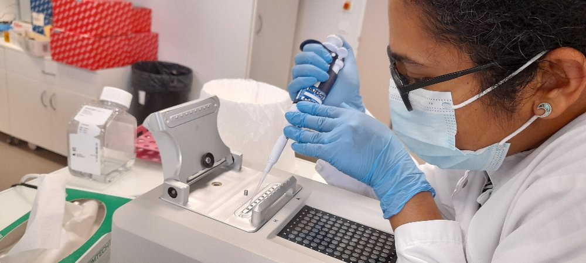

About Me
Doctor - Physiologist - Neuroscientist - Carnatic vocalist
Here is my quick Introduction: I am a medical doctor from India. As an Assistant Professor in a Medical College in India (2010-2021) I completed 3 funded projects, with over 20 publications. In this position, I taught different medical and paramedical courses (MBBS, MD, BDS, MDS, BPT, B.E Medical Electronics, B.Sc Nursing, overall >400 students/year). I am a keen academician with a lot of interest in disseminating scientific knowledge with colleagues and students [consistently rated >4.5 out of 5 by my students, 2010-2021].
I am currently a postdoc in Thierry Charlier's lab, in France studying the effect of anthropogenic stimulants, including toxins on neuroplasticity and behavior using zebrafish and mouse models. For this, I use molecular biology approaches.
I was the main organizer of Neuroscience-2017, Science academies lecture workshop which was sponsored and supported by the Indian Academy of Sciences, The National Academy of Sciences, and the Indian National Science Academy. I was an invited speaker in the ESCOM-ICMPC 2021, APPICON, JIPMER, Pondicherry, Conference on Culture, Design, and Cognition, organized by IGNCA and National Institute of Design and South Asian Regional Conference of International Society for Music Education (ISME) at NIAS, Bengaluru.
Member:Societes des Neurosciences, European Brain and Behaviour Society (EBBS), Association of Physiologists and Pharmacologists of India,Physiological Society of India,Indian Academy of BioMedical Sciences, Society of Music Perception and cognition(SMPC), & was an associate member of The Physiological Society UK.
Awards: For best oral/poster/paper
1) Prof R C Shukla Oration award 2021 - instituted by the Association of Physiologists and Pharmacologists of India (APPI).
2) Siri Research award 2019 - instituted by the Indian Association of Biomedical Scientists (IABMS).
3) Prof N Padmanabhan Memorial Award 2009 - best paper by Postgraduate Student instituted by the Indian Association of Biomedical Scientists (IABMS).
I am also a trained Carnatic classical vocalist, teacher of music, and founding trustee of Kalamshu, Bangalore (www.kalamshu.org).
My research interest is to design preventive & treatment strategies for neuroendocrine & neurological disorders. My dream is to contribute to this world scientifically and train the next-gen.
Looking forward to a life full of learning and contributing to Neuroscience!!!
Education

Education:
MBBS (Bachelor of Medicine and Bachelor of Surgery) 2000 - 2006 - Rajiv Gandhi University of Health Sciences, India
MD (Doctor of Medicine) 2007 - 2010 - Specialized in Physiology - Rajiv Gandhi University of Health Sciences, India
DNB 2010 - 2011 - Physiology - National Board of Examinations, India
Ph.D (Doctor of Philosophy) 2019 - 2023 - Neuroscience - Maastricht University, Netherlands
Postdoctoral Fellow 2022 - 2024 - Neuroscience - University of Rennes, France
Research Interests: Molecular Neuroscience, Neuroendocrinology, Autonomic Neuroscience, Stress Physiology, Auditory system, Translational Research
Publications: Google Scholar!
Research

Past
As an Assistant Professor in a Medical College in India (2010-2021) I completed 3 funded projects (as Principal Investigator of Indian Council of Medical Research and Rajiv Gandhi University of Health Sciences funded projects ~65k€), with over 20 publications. The research broadly covered preventive strategies for non-communicable disorders. I studied the effect of lifestyle modification versus added acoustic stimulation using Indian music to reduce hypertension/prehypertension among patients. Later I studied over 400 healthy individuals for neuro and cardiovascular effects of acoustic stimulation with different melodic scales of music. For this, I included biomarkers of stress and anxiety scales along with heart rate variability and electroencephalography as parameters.
In this position, I taught different medical and paramedical courses (MBBS, MD, BDS, MDS, BPT, B.E Medical Electronics, B.Sc Nursing, overall >400 students/year).
I am a keen academician with a lot of interest in disseminating scientific knowledge with colleagues and students [consistently rated >4.5 out of 5 by my students, 2010-2021].
As I always wanted to be a neuroscientist, I participated in different neuroscience conferences and workshops through those years and got trained in various workshops.
I also organized the 'Neuroscience-2017', Science academies lecture workshop which was sponsored and supported by the Indian Academy of Sciences, The National Academy of Sciences, and the Indian National Science Academy. This symposium had about 13 internationally reputed speakers and over 170 enthusiastic participants.As an Assistant Professor in a Medical College in India (2010-2021) I completed 3 funded projects (as Principal Investigator of Indian Council of Medical Research and Rajiv Gandhi University of Health Sciences funded projects ~65k€), with over 20 publications. The research broadly covered preventive strategies for non-communicable disorders. I studied the effect of lifestyle modification versus added acoustic stimulation using Indian music to reduce hypertension/prehypertension among patients. Later I studied over 400 healthy individuals for neuro and cardiovascular effects of acoustic stimulation with different melodic scales of music. For this, I included biomarkers of stress and anxiety scales along with heart rate variability and electroencephalography as parameters. In this position, I taught different medical and paramedical courses (MBBS, MD, BDS, MDS, BPT, B.E Medical Electronics, B.Sc Nursing, overall >400 students/year). I am a keen academician with a lot of interest in disseminating scientific knowledge with colleagues and students [consistently rated >4.5 out of 5 by my students, 2010-2021]. As I always wanted to be a neuroscientist, I participated in different neuroscience conferences and workshops through those years and got trained in various workshops. I also organized the 'Neuroscience-2017', Science academies lecture workshop which was sponsored and supported by the Indian Academy of Sciences, The National Academy of Sciences, and the Indian National Science Academy. This symposium had about 13 internationally reputed speakers and over 170 enthusiastic participants.
Present
Project description, including further links to posters, talks, publications.
Future
Project description, including further links to posters, talks, publications.
Contact
Email:kirthana.rguhs@gmail.com
Address: IRSET (UMR_S 1085), 9 Av. du Professeur Léon Bernard, 35000 Rennes, France